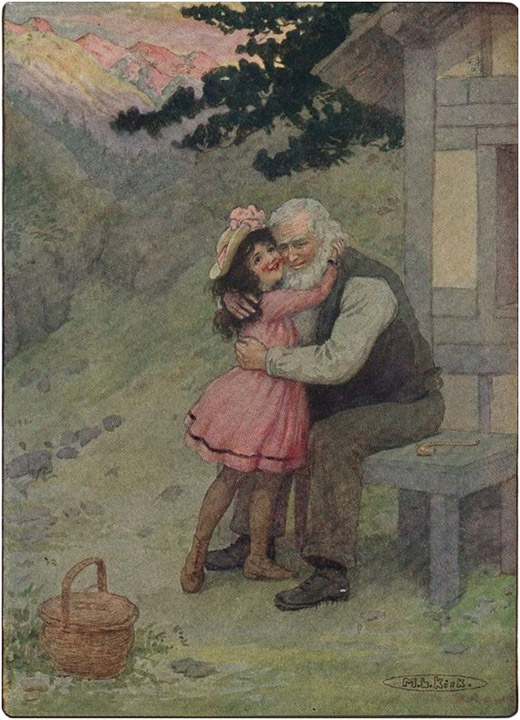

Tuan Sesemann, dengan sangat gelisah naik ke atas, mengetuk pintu pengurus rumah tangga. Ia memintanya untuk bergegas, karena persiapan untuk perjalanan harus dilakukan. Nona Rottenmeier menuruti panggilan itu dengan sangat marah, karena saat itu baru pukul setengah empat pagi. Ia berpakaian dengan tergesa-gesa, meskipun dengan susah payah, karena gugup dan bersemangat. Semua pelayan lainnya juga dipanggil, dan semua orang mengira bahwa tuan rumah telah dirasuki hantu dan sedang meminta bantuan. Ketika mereka semua turun dengan wajah ketakutan, mereka sangat terkejut melihat Tuan Sesemann segar dan ceria, memberi perintah. John disuruh menyiapkan kuda-kuda dan Tinette disuruh mempersiapkan Heidi untuk keberangkatannya sementara Sebastian ditugaskan untuk menjemput bibi Heidi. Tuan Sesemann menginstruksikan pengurus rumah tangga untuk segera mengemas koper untuk Heidi.
Nona Rottenmeier sangat kecewa, karena ia berharap mendapat penjelasan tentang misteri besar itu. Tetapi Tuan Sesemann, yang tampaknya tidak ingin berbincang lebih lanjut, pergi ke kamar putrinya. Clara terbangun oleh suara-suara aneh dan mendengarkan dengan penuh harap. Ayahnya menceritakan apa yang telah terjadi dan bagaimana dokter menyuruh Heidi kembali ke rumahnya, karena kondisinya serius dan mungkin akan memburuk. Ia bahkan mungkin akan memanjat atap, atau menghadapi bahaya serupa, jika tidak segera diobati.
Clara sangat terkejut dan berusaha mencegah ayahnya melaksanakan rencananya. Namun, ayahnya tetap teguh, berjanji akan membawanya sendiri ke Swiss musim panas berikutnya, jika ia bersikap baik dan bijaksana sekarang. Maka , dengan pasrah, anak itu memohon agar koper Heidi dikemas di kamarnya . Tuan Sesemann mendorongnya untuk menyiapkan pakaian yang bagus untuk teman kecilnya itu.
Sementara itu, bibi Heidi telah tiba. Setelah disuruh membawa keponakannya pulang bersamanya, ia memberikan banyak sekali alasan, yang jelas menunjukkan bahwa ia tidak ingin melakukannya; karena Deta masih ingat betul kata-kata perpisahan pamannya. Tuan Sesemann menyuruhnya pergi dan memanggil Sebastian. Kepala pelayan disuruh bersiap-siap untuk bepergian dengan anak itu. Ia akan pergi ke Basle hari itu dan bermalam di hotel bagus yang direkomendasikan tuannya. Keesokan harinya anak itu akan dibawa pulang.
"Dengar, Sebastian," kata Tuan Sesemann , "dan lakukan persis seperti yang kukatakan. Aku tahu Hotel di Basle, dan jika kau menunjukkan kartu namaku, mereka akan memberimu akomodasi yang bagus. Pergilah ke kamar anak itu dan barikade jendelanya, sehingga hanya bisa dibuka dengan kekuatan yang sangat besar. Setelah Heidi tidur, kunci pintunya dari luar, karena anak itu berjalan dalam tidurnya dan mungkin akan celaka di hotel asing itu. Dia mungkin bangun dan membuka pintu; kau mengerti?"
" Oh!—Oh!—Jadi dia pelakunya?" seru kepala pelayan.
"Ya, memang benar! Kau pengecut, dan kau bisa bilang pada John bahwa dia juga sama. Sungguh orang-orang bodoh, takut!" Setelah itu, Tuan Sesemann pergi ke kamarnya untuk menulis surat kepada kakek Heidi.
Sebastian, merasa malu, berkata dalam hati bahwa seharusnya dia menolak John dan mencari tahu sendiri.
Heidi mengenakan gaun hari Minggunya dan berdiri menunggu perintah selanjutnya.
Tuan Sesemann memanggilnya sekarang. "Selamat pagi, Tuan Sesemann," kata Heidi saat masuk.
"Bagaimana menurutmu, Nak?" tanyanya padanya. Heidi mendongak menatapnya dengan takjub.
"Kau sepertinya tidak tahu apa-apa tentang itu," tawa Tuan Sesemann. Tinette bahkan belum memberi tahu anak itu, karena ia menganggap berbicara dengan Heidi yang kasar itu merendahkan martabatnya.
"Pulang?" Heidi mengulangi dengan suara rendah. Ia sampai tersentak, saking terkejutnya.
"Apakah Anda tidak ingin mendengar sesuatu tentang hal itu?" tanya Tuan Sesemann sambil tersenyum.
"Oh ya, aku mau," kata anak yang pipinya memerah itu.
"Bagus, bagus," kata pria baik hati itu. "Duduklah dan makan sarapan yang banyak sekarang, karena Anda akan segera pergi setelah ini."
Anak itu bahkan tidak bisa menelan sepotong makanan pun, meskipun ia mencoba makan karena patuh. Baginya, itu seperti hanya mimpi.
"Pergilah ke Clara, Heidi, sampai kereta datang," kata Tuan Sesemann dengan ramah.
Heidi memang ingin pergi, dan sekarang dia berlari ke kamar Clara, di mana sebuah peti besar berdiri.
"Heidi, lihat barang-barang yang sudah kukemas untukmu. Apakah kamu menyukainya?" tanya Clara.
Ada banyak sekali barang-barang indah di dalamnya, tetapi Heidi melompat kegirangan ketika menemukan sebuah keranjang kecil berisi dua belas roti bundar putih untuk neneknya. Anak-anak itu lupa bahwa saatnya berpisah telah tiba, ketika kereta kuda diumumkan. Heidi masih harus mengambil semua harta miliknya dari kamarnya. Buku neneknya dikemas dengan hati-hati, begitu juga selendang merah yang sengaja ditinggalkan oleh Nona Rottenmeier . Kemudian, sambil mengenakan topi cantiknya, ia meninggalkan kamarnya untuk mengucapkan selamat tinggal kepada Clara. Tidak banyak waktu tersisa untuk melakukannya, karena Tuan Sesemann sedang menunggu untuk memasukkan Heidi ke dalam kereta kuda. Ketika Nona Rottenmeier, yang berdiri di tangga untuk mengucapkan selamat tinggal kepada muridnya, melihat bungkusan merah di tangan Heidi, ia mengambilnya dan melemparkannya ke tanah. Heidi menatap memohon kepada pelindungnya yang baik hati, dan Tuan Sesemann, melihat betapa ia menghargainya, mengembalikannya kepadanya. Anak yang bahagia saat berpisah itu berterima kasih kepadanya atas semua kebaikannya. Dia juga mengirimkan pesan terima kasih kepada dokter tua yang baik hati itu, yang dia curigai sebagai penyebab sebenarnya dari kepergiannya.
Saat Heidi diangkat ke dalam kereta, Tuan Sesemann meyakinkannya bahwa Clara dan dia tidak akan pernah melupakannya. Sebastian mengikuti di belakang dengan keranjang Heidi dan sebuah tas besar berisi bekal. Tuan Sesemann berseru: "Selamat perjalanan!" dan kereta pun melaju pergi.
Barulah ketika Heidi duduk di kereta, ia menyadari ke mana ia akan pergi. Ia tahu sekarang bahwa ia akan benar-benar bertemu kembali dengan kakek dan neneknya, juga Peter dan kambing-kambingnya. Satu-satunya kekhawatirannya adalah neneknya yang buta mungkin telah meninggal dunia saat ia pergi.
Hal yang paling dinantikannya adalah memberikan roti putih lembut itu kepada neneknya. Sambil merenungkan semua hal itu, dia tertidur. Di Basle, dia dibangunkan oleh Sebastian, karena mereka akan bermalam di sana.
Keesokan paginya mereka memulai perjalanan lagi, dan butuh waktu berjam-jam sebelum mereka sampai di Mayenfeld . Ketika Sebastian berdiri di peron stasiun, ia berharap bisa melanjutkan perjalanan dengan kereta api daripada harus mendaki gunung. Bagian terakhir perjalanan mungkin berbahaya, karena semuanya tampak setengah liar di negeri ini. Melihat sekeliling, ia menemukan sebuah gerobak kecil dengan seekor kuda kurus. Seorang pria berbadan tegap sedang memuat tas-tas besar yang datang dengan kereta api. Sebastian, mendekati pria itu, menanyakan beberapa informasi mengenai jalur pendakian yang paling aman ke Alpen. Setelah beberapa saat disepakati bahwa pria itu harus membawa Heidi dan kopernya ke desa dan memastikan seseorang akan menemaninya mendaki dari sana.
Heidi tidak mengucapkan sepatah kata pun, sampai akhirnya ia berkata, "Aku bisa pergi sendiri dari desa. Aku tahu jalannya." Sebastian merasa lega, dan memanggil Heidi, lalu memberinya gulungan uang yang tebal dan sebuah surat untuk kakek. Barang-barang berharga ini diletakkan di dasar keranjang, di bawah gulungan uang, agar tidak mungkin hilang.
Heidi berjanji akan menjaga mereka, dan diangkat ke atas gerobak. Kedua sahabat lama itu berjabat tangan dan berpisah, dan Sebastian, dengan sedikit rasa bersalah karena telah meninggalkan anak itu begitu cepat, duduk di stasiun untuk menunggu kereta yang kembali.
Sopir itu tak lain adalah tukang roti desa, yang belum pernah melihat Heidi tetapi telah banyak mendengar tentangnya. Dia mengenal orang tuanya dan langsung menduga bahwa dia adalah anak yang pernah tinggal bersama Paman Alm. Karena penasaran ingin tahu mengapa dia pulang lagi, dia memulai percakapan.
"Apakah kamu Heidi, anak yang tinggal bersama Paman Alm?"
"Ya."
"Kenapa kamu pulang lagi? Apa hubungan kalian memburuk?"
"Oh tidak; tidak ada seorang pun yang bisa lebih sukses daripada saya di Frankfurt."
"Lalu mengapa kamu kembali?"
"Karena Tuan Sesemann mengizinkan saya datang."
"Pooh! Kenapa kamu tidak tinggal?"
"Karena aku lebih memilih bersama kakekku di Pegunungan Alpen daripada di mana pun di bumi."
"Kau mungkin akan berpikir berbeda saat sampai di sana," gumam tukang roti itu. "Aneh memang, karena dia pasti tahu," katanya dalam hati.
Mereka tidak lagi berbincang, dan Heidi mulai gemetar karena kegembiraan ketika ia mengenali semua pohon di jalan dan puncak-puncak gunung yang tinggi. Terkadang ia merasa tidak bisa duduk diam lagi, tetapi harus melompat dan berlari sekuat tenaga. Mereka tiba di desa tepat pukul lima. Segera sekelompok besar wanita dan anak-anak mengelilingi gerobak, karena koper dan penumpang kecil itu telah menarik perhatian semua orang. Ketika Heidi diturunkan, ia mendapati dirinya ditahan dan ditanyai dari segala sisi. Tetapi ketika mereka melihat betapa takutnya dia, akhirnya mereka melepaskannya. Tukang roti harus menceritakan kedatangan Heidi bersama pria asing itu, dan meyakinkan semua orang bahwa Heidi sangat mencintai kakeknya, apa pun yang orang katakan tentangnya.
Sementara itu, Heidi berlari menyusuri jalan setapak; sesekali ia terpaksa berhenti karena keranjangnya berat dan ia kehabisan napas. Satu-satunya pikirannya adalah: "Seandainya nenek masih duduk di pojoknya di dekat alat pemintal benangnya!— Oh, seandainya ia sudah meninggal!" Ketika anak itu akhirnya melihat gubuk itu, jantungnya mulai berdebar kencang. Semakin cepat ia berlari, semakin kencang jantungnya, tetapi akhirnya ia dengan gemetar membuka pintu. Ia berlari ke tengah ruangan, tak mampu mengucapkan sepatah kata pun karena kehabisan napas.
"Ya Tuhan," terdengar dari salah satu sudut ruangan, "Heidi kita dulu sering masuk seperti itu. Oh, seandainya aku bisa bersamanya lagi sebelum aku mati. Siapa yang datang?"
"Ini aku! Nenek, ini aku!" teriak anak itu, berlutut di hadapan wanita tua itu. Ia meraih tangan dan lengan neneknya, lalu mendekapnya erat, tak mengucapkan sepatah kata pun karena gembira. Sang nenek begitu terkejut sehingga ia hanya bisa membelai rambut keriting anak itu berulang kali dalam diam. "Ya, ya," katanya akhirnya, "ini rambut Heidi, dan suara kesayangannya. Ya Tuhan, aku bersyukur atas kebahagiaan ini." Dari matanya yang buta, air mata kebahagiaan yang besar jatuh di tangan Heidi. "Benarkah itu kamu, Heidi? Apakah kamu benar-benar datang lagi?"
"Ya, ya, nenek," jawab anak itu. "Nenek jangan menangis, karena aku datang dan tidak akan pernah meninggalkanmu lagi . Sekarang nenek tidak perlu makan roti hitam keras lagi untuk sementara waktu. Lihat apa yang kubawakan untukmu."
Heidi meletakkan satu demi satu roti gulung ke pangkuan neneknya.
"Ah, Nak, betapa berkatnya engkau bagiku!" seru wanita tua itu. "Tapi engkau sendiri adalah berkat terbesarku, Heidi!" Kemudian, sambil mengelus rambut dan pipi merah anak itu, ia memohon: "Ucapkan satu kata lagi, agar aku dapat mendengar suaramu."
Saat Heidi sedang berbicara, ibu Peter tiba dan berseru dengan takjub: "Tentu saja ini Heidi. Tapi bagaimana mungkin?"
Anak itu bangkit untuk berjabat tangan dengan Brigida, yang takjub melihat gaun dan topi Heidi yang indah.
"Nenek boleh ambil topiku, aku sudah tidak menginginkannya lagi ; aku masih punya topi lamaku," kata Heidi sambil mengeluarkan topi jerami lamanya yang sudah kusut. Heidi teringat kata-kata kakeknya kepada Deta tentang topi bulunya; itulah sebabnya dia menyimpan topi lamanya dengan sangat hati-hati. Brigida akhirnya menerima hadiah itu setelah berkali-kali menolak. Tiba-tiba Heidi melepas gaun cantiknya dan mengikatkan selendang lamanya di tubuhnya. Sambil memegang tangan neneknya, dia berkata: "Selamat tinggal, aku harus pulang ke rumah kakek sekarang, tapi aku akan datang lagi besok. Selamat malam, nenek."
"Oh, kumohon datang lagi besok, Heidi," pinta wanita tua itu sambil memegangnya erat-erat.
"Mengapa kau melepas gaun cantikmu?" tanya Brigida.
"Aku lebih suka pergi ke kakek dengan cara itu, kalau tidak dia mungkin tidak akan mengenaliku lagi , seperti yang kau lakukan."
Brigida menemani anak itu keluar dan berkata dengan penuh teka-teki: "Dia pasti akan mengenalimu dengan gaunmu; seharusnya kau tetap memakainya. Hati-hati ya, Nak, karena Peter memberi tahu kami bahwa pamannya tidak pernah berbicara sepatah kata pun kepada siapa pun dan selalu tampak marah." Tetapi Heidi tidak khawatir, dan sambil mengucapkan selamat malam, ia menaiki jalan setapak dengan keranjang di lengannya. Matahari senja bersinar di atas rumput di depannya. Setiap beberapa menit Heidi berhenti untuk melihat pegunungan di belakangnya. Tiba-tiba ia menoleh ke belakang dan melihat kemuliaan yang bahkan belum pernah dilihatnya dalam mimpinya yang paling nyata. Puncak-puncak berbatu menyala dalam cahaya yang cemerlang, ladang salju bersinar dan awan-awan merah muda melayang di atasnya. Rumput tampak seperti hamparan emas, dan di bawahnya lembah diselimuti kabut keemasan. Anak itu berdiri diam, dan dalam kegembiraan dan kebahagiaannya, air mata mengalir di pipinya. Ia melipat tangannya, dan sambil menatap ke langit, ia berterima kasih kepada Tuhan karena Dia telah membawanya pulang kembali. Ia bersyukur kepada-Nya karena telah mengembalikannya ke pegunungan yang dicintainya ,— dalam kebahagiaannya ia hampir tak dapat menemukan kata-kata untuk berdoa. Hanya setelah cahaya itu mereda, Heidi mampu mengikuti jalan setapak itu lagi.

Sambil melemparkan dirinya ke pelukan kakeknya, dia memeluknya erat- erat.
Ia memanjat begitu cepat sehingga segera dapat melihat, pertama-tama puncak pepohonan, kemudian atap, dan akhirnya gubuk itu. Kini ia dapat melihat kakeknya duduk di bangkunya, merokok pipa. Di atas pondok, pohon-pohon cemara bergoyang lembut dan berdesir tertiup angin malam. Akhirnya ia sampai di gubuk, dan melemparkan dirinya ke pelukan kakeknya, memeluknya erat-erat. Ia hanya bisa berkata "Kakek! Kakek! Kakek!" karena kegelisahannya.
Pria tua itu juga tidak berkata apa-apa, tetapi matanya berkaca-kaca, dan akhirnya melepaskan pelukan Heidi, lalu mendudukkannya di pangkuannya. Setelah memandanginya sejenak, dia berkata: "Jadi kau sudah pulang lagi, Heidi? Mengapa? Kau sama sekali tidak terlihat seperti orang kota! Apakah mereka mengusirmu?"
"Oh tidak, kakek jangan berpikir begitu. Mereka semua sangat baik padaku; Clara, Tuan Sesemann, dan nenek. Tapi kakek, kadang-kadang aku merasa seolah-olah aku tidak tahan lagi berjauhan darimu! Aku pikir aku akan tersedak; aku tidak bisa memberi tahu siapa pun , karena itu akan menjadi tindakan tidak berterima kasih. Tiba-tiba, suatu pagi Tuan Sesemann memanggilku sangat pagi, kurasa itu kesalahan dokter dan—tapi kurasa itu mungkin tertulis di surat ini;" dengan itu Heidi mengambil surat dan uang kertas dari keranjangnya, lalu meletakkannya di pangkuan kakeknya.
"Ini milikmu," katanya sambil meletakkan gulungan itu di sampingnya. Setelah membaca surat itu, dia memasukkannya ke dalam sakunya.
"Menurutmu, apakah kamu masih bisa minum susu bersamaku, Heidi?" tanyanya sambil melangkah masuk ke dalam pondok. "Bawa uangmu, kamu bisa membeli tempat tidur dan pakaian untuk bertahun-tahun."
"Aku sama sekali tidak membutuhkannya, kakek," Heidi meyakinkannya; "Aku punya tempat tidur dan Clara telah memberiku begitu banyak gaun sehingga aku tidak akan membutuhkannya lagi seumur hidupku."
suatu hari nanti kamu akan membutuhkannya ."
Heidi menurut, dan menari-nari di sekitar gubuk karena gembira melihat semua barang kesayangannya lagi. Berlari ke loteng, dia berseru dengan sangat kecewa: "Oh kakek, tempat tidurku hilang."
"Itu akan datang lagi," teriak kakek dari bawah; "bagaimana aku bisa tahu kau akan kembali? Ambil susumu sekarang!"
Heidi, sambil turun, mengambil tempat duduk lamanya. Ia meraih mangkuknya dan menghabiskannya dengan lahap, seolah-olah itu adalah hal terenak yang pernah ia cicipi. "Kakek, susu kita adalah yang terbaik di seluruh dunia."
Tiba-tiba Heidi, mendengar suara siulan melengking, bergegas keluar, saat Peter dan semua kambingnya berlarian turun. Heidi menyapa anak laki-laki itu, yang berhenti, terpaku di tempatnya, menatapnya. Kemudian dia berlari ke tengah-tengah teman-teman kesayangannya, yang juga tidak melupakannya. Schwänli dan Bärli mengembik kegirangan, dan semua kambing kesayangannya yang lain mengerumuninya. Heidi sangat gembira, dan membelai Snowhopper kecil dan menepuk Thistlefinch , sampai dia merasa dirinya terdorong ke sana kemari di antara mereka.
"Peter, kenapa kamu tidak turun dan mengucapkan selamat malam padaku?" Heidi memanggil anak laki-laki itu.
"Kau datang lagi?" serunya akhirnya. Kemudian dia meraih tangan Heidi yang diulurkan dan bertanya padanya, seolah-olah Heidi selalu ada di sana: "Apakah kau akan ikut denganku besok?"
"Tidak, besok aku harus pergi ke rumah nenek, tapi mungkin lusa."
Peter mengalami kesulitan dengan kambing-kambingnya hari itu, karena mereka tidak mau mengikutinya. Berulang kali mereka kembali ke Heidi, sampai akhirnya dia masuk ke kandang bersama Bärli dan Schwänli dan menutup pintu.
Ketika Heidi naik ke lotengnya untuk tidur, ia menemukan tempat tidur yang segar dan harum menunggunya; dan ia tidur lebih nyenyak malam itu daripada yang pernah ia alami selama berbulan-bulan, karena kerinduannya yang besar dan membara telah terpenuhi. Sekitar sepuluh kali malam itu kakeknya bangkit dari tempat tidurnya untuk mendengarkan napas Heidi yang tenang. Jendela itu dipenuhi jerami, karena mulai sekarang bulan tidak diizinkan lagi menyinari Heidi. Tetapi Heidi tidur dengan tenang, karena ia telah melihat gunung-gunung yang menyala dan telah mendengar deru pohon-pohon cemara.